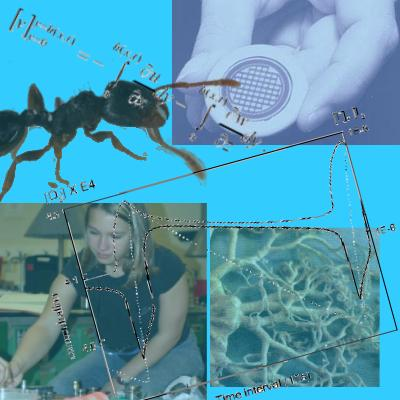

|
Math 512Contemporary Applications of Mathematics |
 |
|
| Welcome Course description Projects Resources Report archives Related links |
Welcome to the Math 512 home page.Math 512 is the Math Department Capstone course for all BS majors and offers a unique opportunity for math and technical majors interested in exploring mathematical topics and their connections to the real world. This course focuses on modeling, experimentation, computation and the application of mathematical methods to open problems.  A little history and a lot of gratitude.Math 512 is an evolving course. Prof. Lou Rossi revised the course shortly after arriving at the University of Delaware in 2001 to emphasize large scale problem solving based on his experiences building an undergraduate modeling program at the University of Massachusetts Lowell. Prof. John Pelesko and his MEC Lab arrived in 2002, and the Center for Teaching Excellence supported the development of a laboratory component for Math 512 starting in the Fall of 2003. When we made plans to support interdisciplinary interactions by teaming up with Cathy Davies in the Food Science Program, again, the Center for Teaching Excellence came to the rescue and supported our efforts. Through all these changes, the Math Department has supported these efforts, and starting in 2004, Math 512 will have a TA assigned to it. In short, Math 512 would not be what it is without a lot of help from a lot of people. We would like to thank:
|